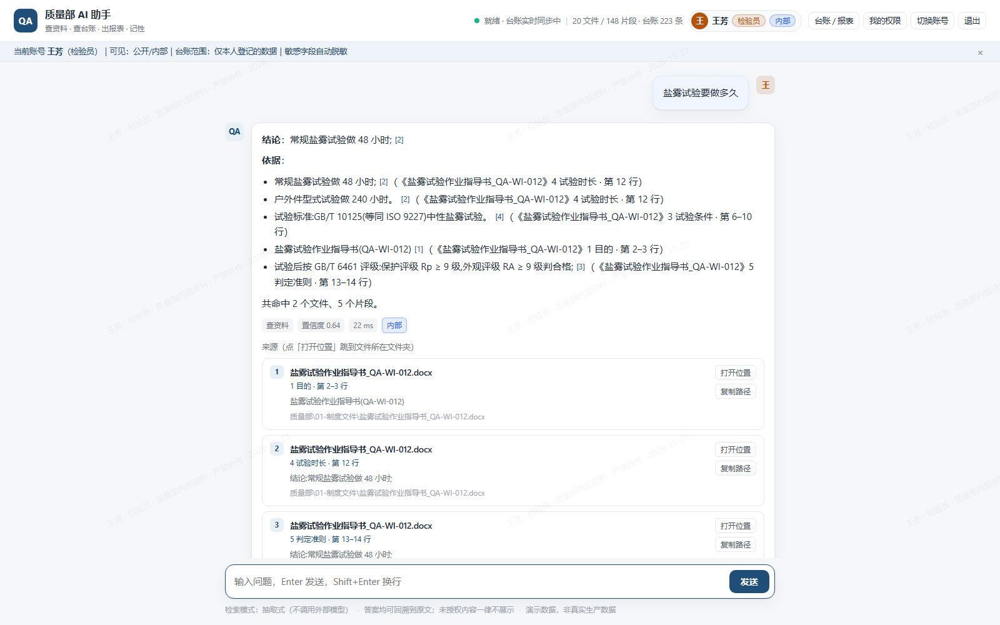
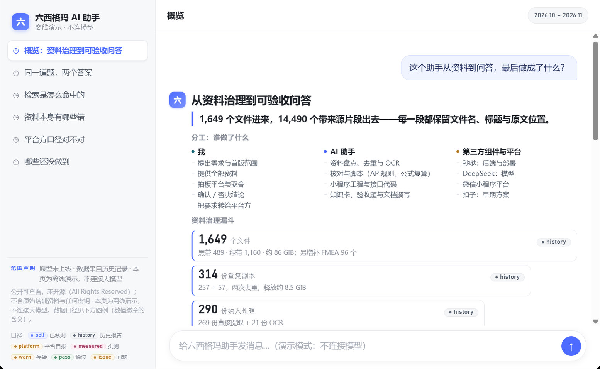

龚楚然 个人作品集
把 AI 应用做对，让交付可验证。
我是龚楚然，材料科学与工程本科，在制造业质量部把 AI 助手从需求推到 30–40 人每天使用；也独立做过六西格玛小程序和 AI 美甲试戴站。
我擅长把「看起来能用」拆成能验证的用例：查得准不准、依据够不够、权限越不越界、断网会不会降级。
About us · 关于我
把 AI 应用做对，
让每个结论都有出处。
白天在质量部做数据、审核与 AI 助手落地；业余把项目从原型推到可访问的站点。测试、交付、复盘，三件事我都自己上手。我不只写「做完了」，更在意能不能说清楚：依据在哪、边界在哪、出了问题怎么复现。
验收测试缺陷复现与回归权限与安全知识库治理多模态评测Python / Canvas
Education · 教育
长安大学（211）
材料科学与工程 · 本科前 5%
材料科学与工程 · 本科前 5%
2022.09 – 2026.06
Open to · 意向
AI 应用交付工程师
AI 应用测试工程师
AI 应用测试工程师
重庆 · 成都 · 昆明
Featured project · 精选项目
EXPLORE
EXPLORE
MY WORK
我的项目
01 / 03
部门 AI 助手
Enterprise Quality Department AI Assistant
内部项目 · 交付与验收
688 份质量文档，30–40 人日常使用，检索定位耗时缩短 50%–70%。查看项目 → 02 / 03 美甲试戴网站 AI Nail Virtual Try-On & Visual QA

个人项目 · 多模态评测
18 组归因复盘、31 组离线回归，站点已公网可访问。查看项目 → 03 / 03 六西格玛 AI 助手 Six Sigma AI Assistant Mini Program
个人项目 · 知识工程与测试
61 条核心资料、12 项验收闭环，按 DMAIC 阶段检索与溯源。查看项目 →

688 份质量文档，30–40 人日常使用，检索定位耗时缩短 50%–70%。查看项目 → 02 / 03 美甲试戴网站 AI Nail Virtual Try-On & Visual QA

18 组归因复盘、31 组离线回归，站点已公网可访问。查看项目 → 03 / 03 六西格玛 AI 助手 Six Sigma AI Assistant Mini Program

61 条核心资料、12 项验收闭环，按 DMAIC 阶段检索与溯源。查看项目 →
如何
联系我？
Want to start a new project?or just say hello！
我的联系方式
优先邮件；电话仅用于求职沟通，请勿用于营销。
下载简历
三份 PDF 分别对应交付、FDE、测试方向；按投递岗位选一份即可。